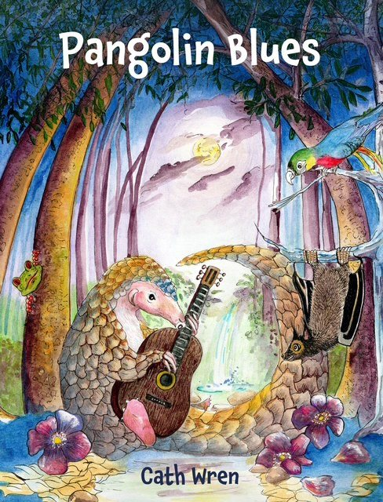
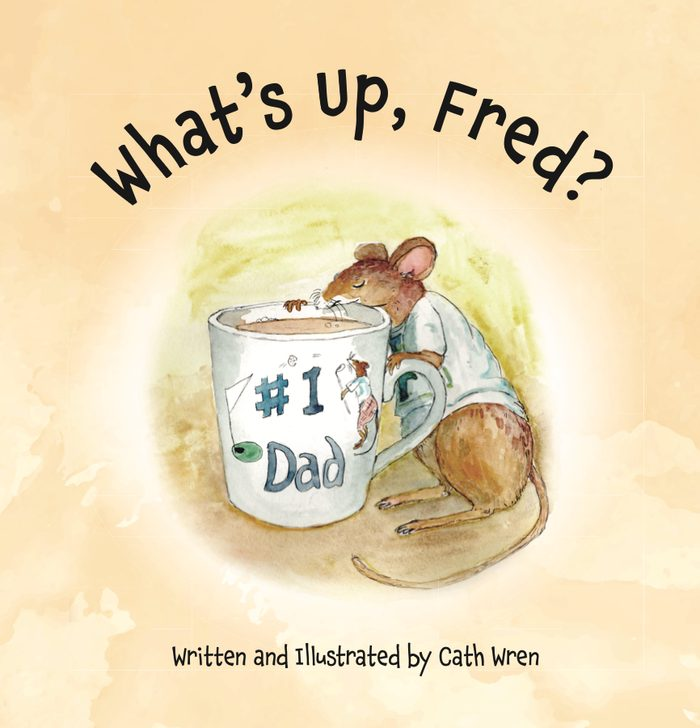

A conservation story
Pangolin Blues
Can Peter Pangolin reach safety with his Mum? Follow them through the forest where they live. It’s a dangerous place to be when your only defence is to curl up in a ball.
A conservation book for children aged 4 and up.
Rated 4.5 out of 5 by The Book Dragon.

For ages 0 to 8
What’s Up, Fred?
Fred’s back and he’s very shaken since his encounter with the “big person” with a bright red, VERY LOUD drumkit. The doctor’s advice is to have plenty of rest and above all, no noise.
But with 16 ultra-noisy children, is that going to happen?
Not on your Nellie!
For the pangolins
Bird-watching and drawing birds was my biggest joy until pangolins came along. Now I’m passionate about pangolin conservation, and Pangolin Blues is where that went.
About Cath
I’m from Sunderland and have lived there all my life. I gave up a job in finance ten years ago and now work part time as a bra fitter and a teaching assistant for children with special educational needs, and I have a pet portrait business.
I also upcycle jewellery and run craft classes. My favourites are Beatrix Potter, Julia Donaldson with Axel Scheffler, and Catherine Rayner, and at home Cilla, an adopted stray cat, rules the household.
Where to find me
My books are in independent bookshop The Book Dragon, which listed What’s Up, Fred? in April 2026 and Pangolin Blues in December 2025.